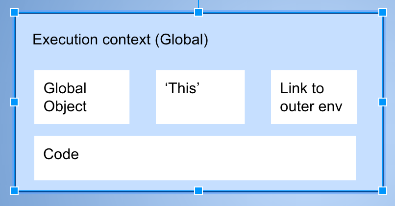

Existe una serie de conceptos fundamentales en todos los lenguajes de programación. Es importante que comprendas estos conceptos, ya que te ayudarán a entender que sucede al momento de ejecutar tu código.
Definitivamente la mejor forma de aprender cualquier lenguaje es la repetición. Práctica realizando ejercicios, retos, resuelve problemas, etc. Pero, también debes dedicar tiempo en comprender conceptos que suenan complicados, pero realmente no son dificiles de aprender.
Javascript no está excento de ellos, por lo que ántes de trabajar con tu código, te recomiendo analizar y comprender algunos conceptos importantes.
En esta primera parte vas a comprender tres conceptos:
La sintáxis de un lenguaje de programación describe las combinaciones posibles de los símbolos que forman un programa.
[1,5,5].sort(function(){return (4*Math.random()>2)?1:-1});
Es un programa que se encarga de leer tu código y determina si su sintaxis es correcta.
El proceso del syntax parser es el siguiente:
Los dos primeros pasos son bastante directos. El tercer paso es interesante, ya que introduce a los conceptos de Compiladore Interprete.
A grandes rasgos, el código que escribes en Javascript, contiene una sintaxis fácil de leer para nosotros los humanos, el problema es que para la computadora no significa absolutamente nada. Es donde entra el interprete o en caso de Javascript comunmente lo llaman motor es el encargado de implementar la sintaxis de tu código de manera que la computadora pueda entender.
Dentro de este proceso se encuentra al analizador de sintaxis. Su trabajo es recorrer caracter por caracter tu código. Él sabe todas las reglas, si debe de existe un espacio o no después de un caracter y posteriormente lo traduce al sistema.
La palabra léxico tiene que ver con palabras o gramatica. Habla del codigo que escribes, su sintaxis, vocabulario.
Donde algo se posiciona fisicamente en el codigo que se escribe.
Donde un expresion, declaracion existe en tu codigo.
function saludar() {
var saludo = "Hola amigos!";
return saludo;
}
Lexico significa todo lo que tiene que ver con palabras o gramatica
Donde un expresion, declaracion existe en tu codigo.
Donde algo se posiciona fisicamente en el codigo que se escribe.
Lexical significa todo lo que tiene que ver con palabras o gramatica
Un entorno lexico existe en un lenguaje de programacion en donde escribes algo que es importante.
Sintaxis, vocabulario.
Una funcion tiene dentro de ella una variable. La variable se posiciona lexicamente dentro de la funcion.
Es fisicamente el codigo que escribes, es donde se posiciona.
El codigo no se entregad direcmqtne a l computadora, si no se que se traduce a algo que la comptuadra deba entenret.
Te da una idea de en que parte de la memoria se encuentra la parte del codigo que escribes.
Es importante saber donde pones las cosas.
Lexical enviromente, donde se escribe y que es lo que lo rodea.
Un wrapper que ayuda a administrar el codigo que se esta corriendo.
Hay muchos lexical enviroments. Pero el que este corriendo en ese momento se llama Contxto de ejecucion el que contiene el codigo que corre.
Pero tambien puede contener cosas mas alla de lo que escribiste en tu codigo.
Ya que tu codigo es procesado Ejecuta tu codigo y puede hacer otras cosas a su alreddor.
Lexical enviroments, execution context, syntax parsers
El contexto de ejecucion global es accesible desde cualquier parte del cdogio
El motor de Javascript crea
Un objeto global: Window en el navegador y Process en NodeJs.
Una variable especial llamda this
Verifica en tu consola de desarrollo que sin Javascript el motor crea un Windows y this los cuales son globales.
Un link a el outer enviroment
- Si tu codigo esta corirendo una funcion, tiene un enlace al outer env

Es importante para comprender que pasa por debajo de Javascript